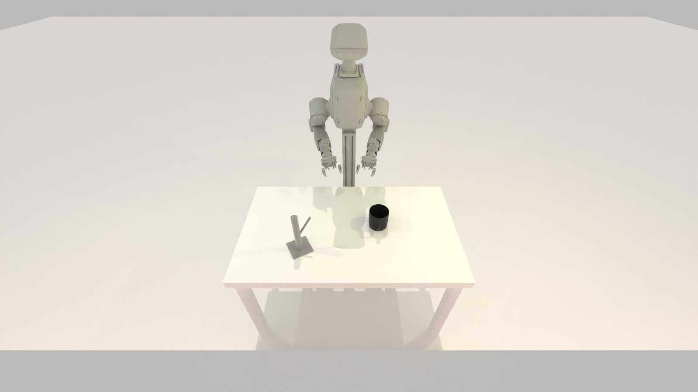
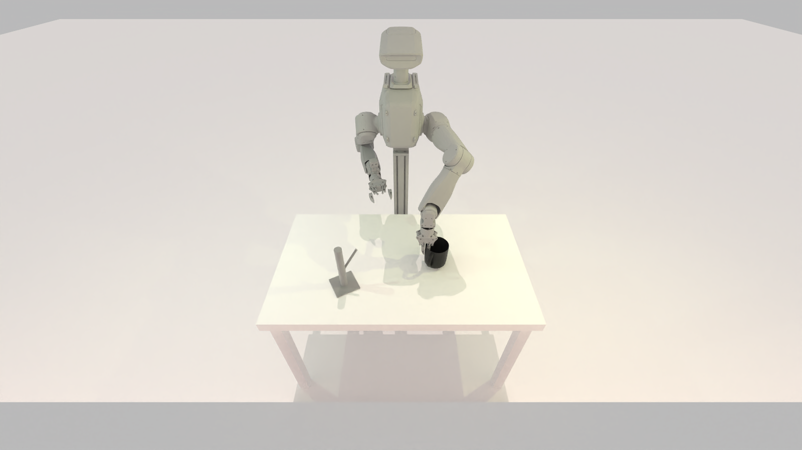
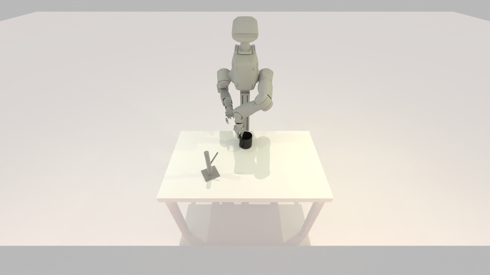
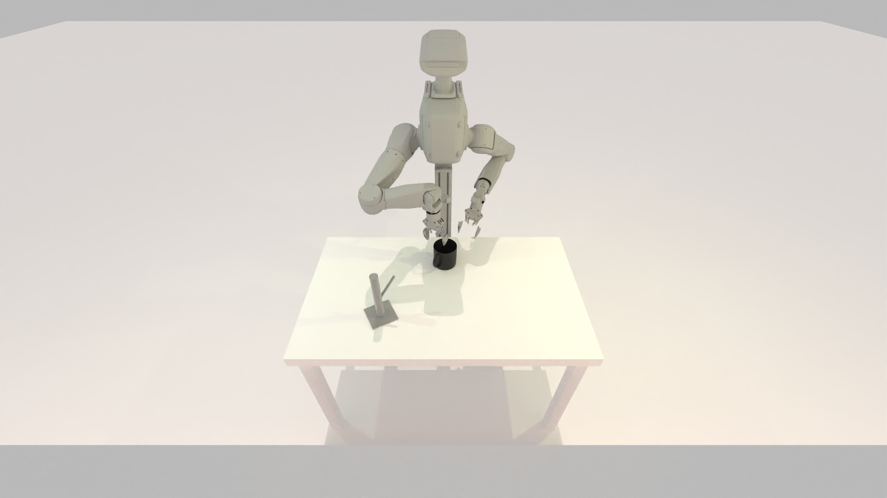
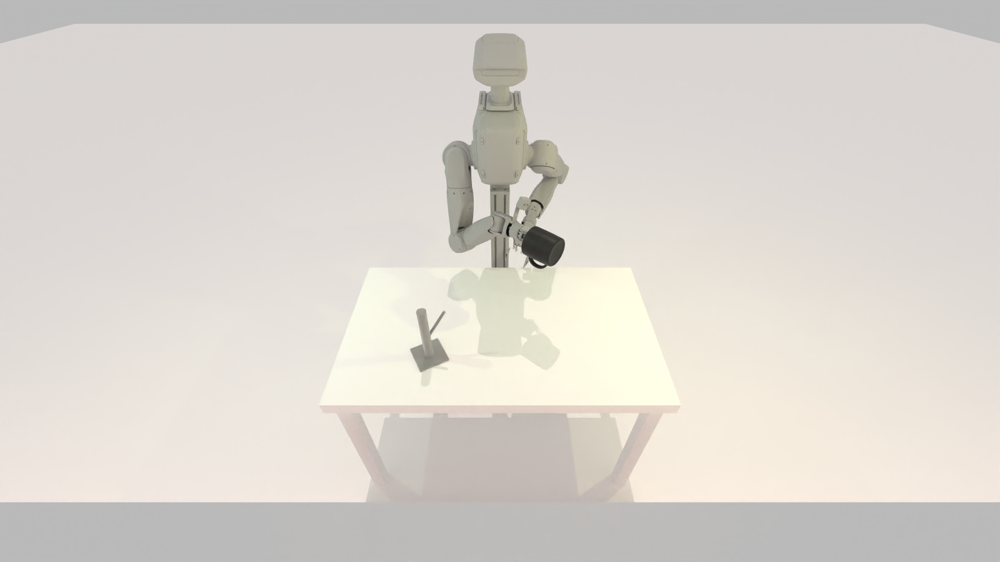
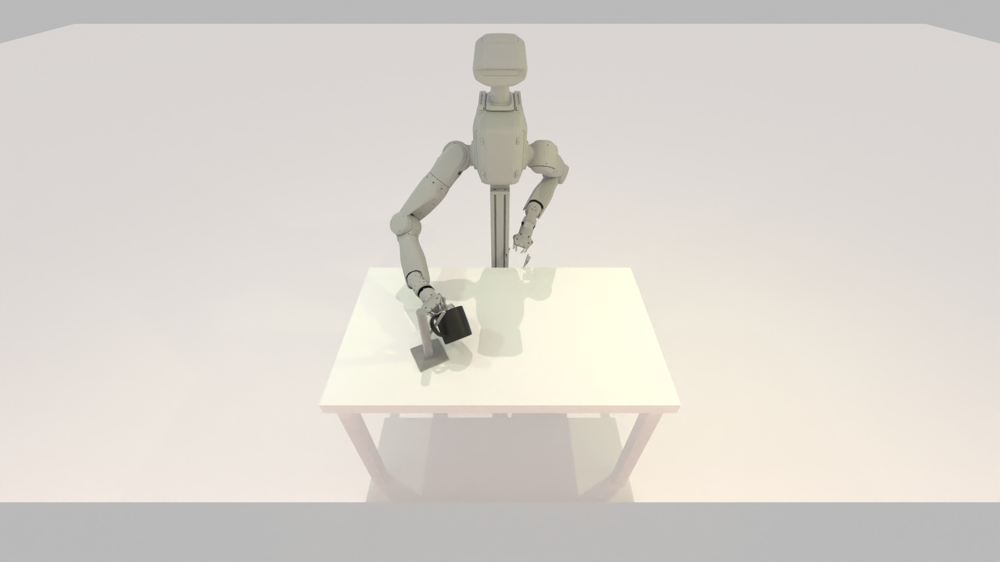

单任务 hanging_mug(RoboTwin 官方语义):左臂从桌面抓起杯子、调整朝向、放到正中, 右臂再抓取并把它挂到金属杯架的挂杆上。统一用 π0.5 三路图像策略 LoRA 微调, 竞争轴是对域随机化的鲁棒泛化——从弱随机化一路爬到全域 OOD。
舞台是一张桌子:桌面上放着一只杯子和一个带挂杆的金属杯架。 一台双臂 Tron2 人形机器人完成一整套灵巧操作:
这是 RoboTwin 原生 hanging_mug 的官方语义(左抓右挂)。任务对双臂配合、抓取朝向、
以及挂杆对位的精度都有要求,是典型的双臂灵巧操作。






上图为 hanging_mug 单个 seed 的六帧全景示意(看得见整机器人 + 桌面 + 杯/架)。任务示意图仅用于说明语义,实际评测在带域随机化的场景下逐 seed 跑。
全卷统一单模型、单仿真栈,比的是鲁棒泛化的算法,而非模型大小或任务选择。
策略输入三路相机图像加上机器人状态与语言指令:
输出双臂关节动作;从 gs:// 拉 π0.5 base ckpt,LoRA 微调(ema_decay=None,消费级 24G 显存即可塞下)。
竞争轴是策略对域随机化的鲁棒泛化能力,基于 RoboTwin 原生的 task_config 旋钮逐档加码:
越往后,场景越偏离训练分布,只有真正学到鲁棒表征的策略才稳得住。
clone 一个公开自包含仓,一键装环境,其余全是干净的「数据 → 训练 → 评测 → 上榜」流程。
clone limx-troncamp/troncamp,跑 setup/install.sh 装好 RoboTwin(curobo / sapien / mplib)+ π0.5(uv / JAX)双环境,env_check.py 自检。
主办方用专家脚本采好一份 raw bag 全卷共用下发;T1 直接处理这份数据,后续档可在此基础上做增强 / 补采。
starter/train.py 跑基线 config,把数据转成 3 相机 LeRobot 格式后 LoRA 微调出能挂杯子的模型。
starter/eval_local.py 在公开 dev 种子上本地出分(= 主办方评测同一套 harness,只换种子);starter/watch_rollout.py 渲一段近景 rollout 视频核查行为。
submit/submit.py 带 token 按 track 提交 ckpt(+ policy 代码);主办方在私有 final 种子上权威评测,匿名 token 榜出名次。
评测逻辑公私共用一份:你本地自评跑的就是主办方评测的同一套 run_eval.py,只是把公开的 dev 种子换成私有的 final 种子。本地 dev 分可作自测参考。